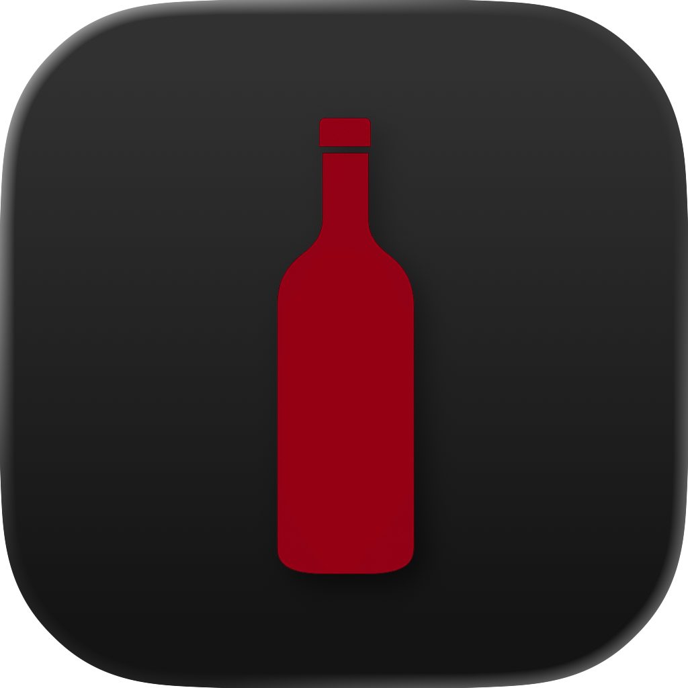
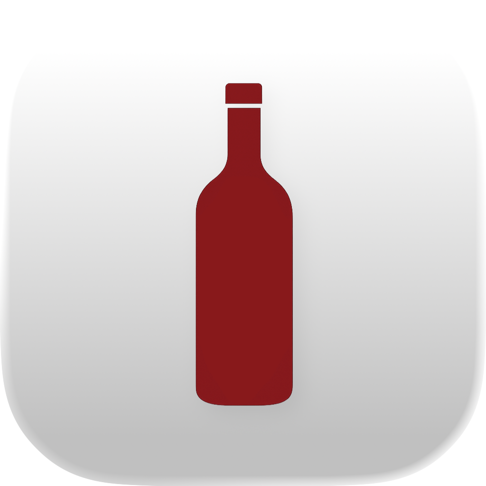

Your personal wine cellar - beautifully organized
Track your collection with AI-powered label recognition, Vivino integration, and a stunning 3D globe.
Run as a Home Assistant add-on or standalone Docker container.
Why Wine Tracker?
Built for privacy, designed for simplicity, driven by the community.
Local First
Everything runs on your Home Assistant or Docker. No cloud, no subscription, no data sharing. Your wine cellar stays yours — always.
AI — Optional & Affordable
Snap a label photo → AI fills in everything. Choose your provider: OpenAI, Anthropic, or Ollama (free, local). Analyzing 100 wines costs less than $0.10 with GPT-4o-mini.
Community Driven
Built by wine lovers, for wine lovers. Feature requests, feedback, and contributions are always welcome. Join us on GitHub or the HA Community forum.
See it in action
A beautiful, responsive interface designed for wine lovers. Works seamlessly on desktop and mobile.


Everything you need to manage your cellar
From AI-powered label recognition to interactive globe visualization - Wine Tracker has you covered.
Wine Cards
Beautiful cards with photo, vintage, type, region, grape variety, star rating, and personal tasting notes.
AI Label Recognition
Snap a photo of any wine label and let AI fill in all fields automatically. Supports Claude, GPT, OpenRouter, and Ollama.
Vivino Search
Search by name, see community ratings, regions, and prices. Import wine data directly into your collection.
Interactive Globe
See your wine regions on a beautiful 3D WebGL globe. A stunning way to visualize your collection geographically.
Statistics
Donut charts by type, total bottles, total liters, collection value, and average age - all at a glance.
AI Sommelier
Ask for food pairings, serving temperature, and recommendations based on your collection and preferences.
7 Languages
Full support for German, English, French, Italian, Spanish, Portuguese, and Dutch.
Docker Standalone
Run without Home Assistant. Simple Docker Compose setup with persistent data volumes.
User Authentication
Built-in login with admin and readonly roles. Secure your collection with multi-user support.
Star Ratings
Rate your wines from 1 to 5 stars. Filter and sort by your personal ratings.
Maturity Graph
Visualize your wine's drinking window with an interactive maturity curve. Know exactly when each bottle is at its peak.
Timeline
Track every addition, edit, and tasting in a chronological activity log. See your cellar's full history at a glance.
Taste Profile & Pairings
AI-generated taste profiles with body, tannin, acidity, and sweetness. Get food pairing suggestions for every wine.
Quick Start with Docker
Up and running in under a minute. No Home Assistant required.
Three simple steps
- Create a
docker-compose.ymlfile with the configuration shown here - Run
docker-compose up -dto start the container - Open
http://localhost:5050in your browser and log in
All data is stored in a Docker volume - your collection survives container updates.
View full configuration on GitHubservices: wine-tracker: image: ghcr.io/xenofex7/wine-tracker:latest ports: - "5050:5050" volumes: - wine-data:/data environment: - AUTH_ENABLED=true - USERS=admin:changeme - SECRET_KEY=change-this-to-a-random-string - CURRENCY=CHF - LANGUAGE=de restart: unless-stopped volumes: wine-data:
Home Assistant Add-on
Seamless integration with your smart home. Install directly from the add-on store.

- Click the button above or manually add the repository URL:
https://github.com/xenofex7/ha-wine-tracker - Wine Tracker will appear in your add-on store. Click Install
- Start the add-on - it opens in your HA sidebar under Wine Tracker